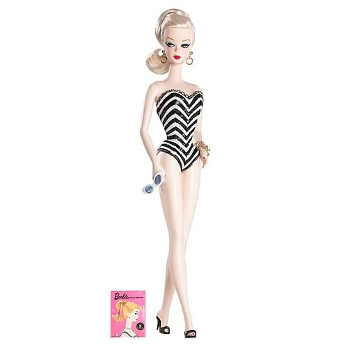

Barbie Timeline
1959
Barbie was introduced to the world in 1959, created by Ruth Handler and produced by Mattel. She was designed to be a teenage fashion model and quickly became a cultural icon. The first Barbie wore a black and white swimsuit and had her signature blonde ponytail.